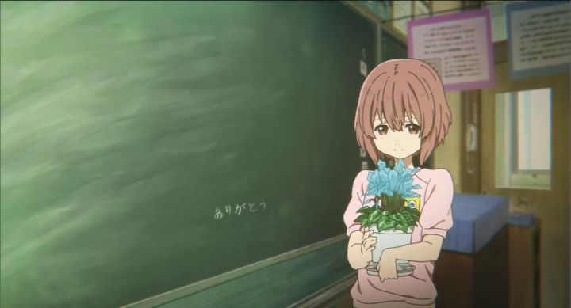

In 2016, three major anime feature films were released in Japan, receiving critical acclaim both domestically and internationally. The first was "Your Name" by director Makoto Shinkai: Shinkai was a well-known independent director that struggled to make movies that appealed to larger audiences, but succeeded with "Your Name," breaking records in ticket sales and cementing his legacy. The second film was "In This Corner of the World," a subtle portrait of Japan citizens during World War II. The third film was "A Silent Voice," based on a well-received manga and animated by Kyoto Animation, a studio known for its lush backgrounds and expressive animation. Aside from "In This Corner, " each are essentially romance stories revolving around high-school kids, but to compare the stories any further is unjustified. "Your Name" and "In This Corner" quickly got released in North America a year after Japan, but strangely "A Silent Voice" remained out of reach for Americans in that same time frame, even though the UK already released the film on home video with an English dub. The best Americans had was a limited theatrical release a full year after Japan's release, mysteriously distributed by Eleven Arts and not yet tied to any US home-video distributor. Of the few fans who have seen all of "Your Name," "In This Corner" and "A Silent Voice," they tend to say that "A Silent Voice" is the best of the three. While I personally disagree, I can understand why this opinion is common. This movie manages to talk about bullying, acceptance, drepression and friendship in a powerful way, and I think is likely to strike a personal cord with its viewers. "A Silent Voice" (also known by the more awkward name "The Shape of Voice," which was confusingly used in the title screen at the start), begins with abstract images of ripples in water, light at the end of a tunnel, flashbacks to young boys goofing off to the American song "My Generation," and with teenage main character Shoya about to jump off a bridge to commit suicide. He hesitates and walks home, and is confronted by his mother, having suspected his intentions after finding clues that he intended this to be his last day. So Shoya lives on, and we start to understand what led him to this decision. As a child, he led his class in bullying new student Shoko, who is deaf. While the entire class was effectively in on it, even the teachers who generally did nothing to stop it, Shoya eventually goes too far, from teasing and insults to slapping and permanent injury. It results in Shoko moving to a different school due to bullying, and the class immediately pinning the responsibilty on Shoya alone. Shoya sees his mother apologize on his behalf, and becomes the new taget of bullying from those he used to call his friends. As a teenager, he has grown to become socially awkward, not making friends with anyone or even making eye contact, visually represented by walking 'X' 's that obscure the face of strangers around him. This is in part because of being a victim, but also out of extreme guilt for his adolecent behavior. Does he have the right to have friends? Does he even have the right to live?Depression and bullying is not necessarily uncommon in anime, and to some (disturbing) extent, in children's films and television in general. But "A Silent Voice" is more personal than that. The idea of intense guilt from how one acted as a child leading to suicidal thoughts years later is not easy to discuss, and I haven't seen it in any other story. It strikes a cord with me because, personally, I too felt extreme guilt from how I behaved as a child. The feeling hit me like a wall of bricks out of nowhere a few years before high school, and it changed how I acted from that point on. While I never went as far as bullying others as a child, and never stepped near a ledge of a bridge as an adult, I have long been socially awkward, ceasing trying to fit in and only trying to not hurt or offend anyone with my presence. I often feel that I am not worthy to be truely happy, and if given the chance, I would say "sorry" over and over to the thousands of people I've met, for things I've long since blocked out of my memory, mostly simple things like making incosiderant comments or accidently cutting in line. "A Silent Voice" isn't perfect in its' motivation. It makes Shoya a victim of bullying to help further make clear why he feels like he does, which I don't think was necessary to make his feelings known. Shoko's innocent disposition, to constantly apologize and forgive cruel behavior towards her as a child, also can confuse viewers who weren't in that type of position in their lives. Despite the depressing subject matter, the film is surprisingly upbeat, full of humor both in conversation and sight gags as Shoya slowly gains new friends in high-school. Further confusing the tone is that Shoya dedicates himself to becoming friends with Shoko as a means to both be forgived and to forgive himself... which slowly progresses as a sweet love story when Shoko confesses her love to him? A handful of subtle scenes are never fully explained, and there are a few "blink-and-you-miss-it" scenes where you can catch scars that were left from the behavior of these children. The story doesn't necessarily have a clear structure either, and feels it drags on about 30 minutes longer than was necessary.The visuals are made to fit the tone, and therefore are subtle in their simplicity of everyday life. Character designs are unique to better match the original manga source-material. The visuals never get too impressive, and animation shines most in subtle movements and facial expressions of the characters. Could the movie have looked better? Absolutely, especially when looking at past work Kyoto Animation has done. But this story didn't need much more than this, and it remains mostly strong from a technical perspective. More impressive are some of the design choices of the visuals and audio to represent depression and anxiety. I mean to say that the director's creativity is what makes the movie shine, not necessarily the production value. Naoko Yamada is an experienced director at Kyoto Animation, but had only worked primarily on cute slice-of-life television shows. This will likely be a high-point of her career, but I look forward to more from her. And I can't forget the strong Japanese voice cast, although I am curious of the UK English dub, which features Lexi Cowden as Shoko, an actress who is deaf in real life. Never minding how it turns out, it was a respectible move, andn shows the respect the English cast has to the film.Whie the film is solid, the passion to recommend it comes from its subject matter and how it treats it. It shows that everyone has regrets that stem from their confusion of how to be in childhood, and accepting those mistakes is a part of growing up. It shows that this is something everyone goes through, even though it sometimes comes later for some than others (well shown in old friends that continue to tease Shoko when Shoya has long sinced moved on, unaware they are doing anything wrong). It represents depression and guilt in a honest way, more effective than most. And the warm reception received suggests to me that this really is a type of problem that affects EVERYONE in a variety of ways. I always attributed my satisfaction to continue living today to the pursuit of creating art, and in enjoying and looking forward to the art that is created my the human race every day. Rather than giving me a reason to live, "A Silent Voice" gives me a reason to not feel so bad about my life up to now. That's a life-changing thought.
- "Ani" More reviews can be found at : https://2danicritic.github.io/ Previous review: review_A_Liar's_Autobiography_-_The_Untrue_Story_of_Monty_Python's_Graham_Chapman Next review: review_A_Sister's_All_You_Need